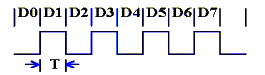
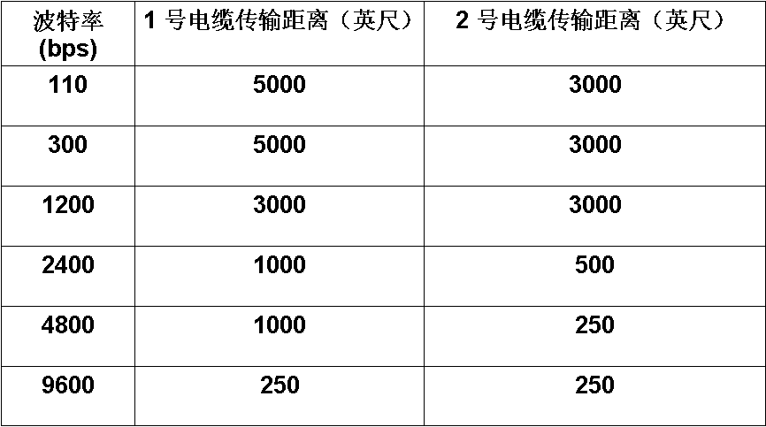
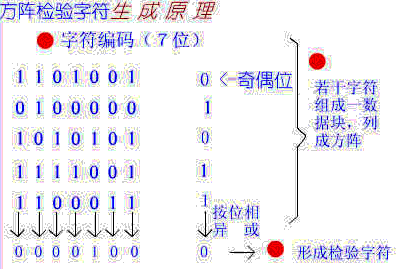

串口通信
串行通讯

串行通讯：一条信息的各位数据被逐位按顺序传送的通讯方式称为串行通讯。
串行通讯的特点是：数据位传送，传按位顺序进行，最少只需一根传输线即可完成，
成本低但送速度慢。串行通讯的距离可以从几米到几千米。
根据信息的传送方向，串行通讯可以进一步分为单工、半双工和全双工三种。
单片机串口通信一般是11位，起始位1bit，数据位8bit，校验位1bit，
停止位1bit，串口通信分两种一种是同步通信，一种是异步通信，像ps\2键盘就是同步，
一般的单片机下载都是异步通信，起始位表示过了这个位就是数据位了，接着8位数据，然后校验，然后停止位，停止位表示这一桢数据结束。
波特率

奇偶校验
奇校验(O)：所有传送的数位（含字符的各数位和校验位）中，“1”的个数为奇数，如：
1 0110，0101
0 0110，0001
偶校验(E)：所有传送的数位（含字符的各数位和校验位）中，“1”的个数为偶数，如：
1 0100，0101
0 0100，0001
无校验(N)：

数据位与停止位
数据位：1位、2位
停止位：1位、1.5位、2位
流控制
流控制在串行通讯中的作用： 解决丢失数据的问题
硬件流控制：硬件流控制常用的有RTS/CTS（请求发送/清除发送）流控制和DTR/DSR（数据终端就绪/数据设置就绪）流控制
软件流控制：一般通过XON/XOFF来实现软件流控制。
单工、半双工和全双工的定义
如果在通信过程的任意时刻，信息只能由一方A传到另一方B，则称为单工。
如果在任意时刻，信息既可由A传到B，又能由B传A，但只能由一个方向上的传输存在，称为半双工传输。
如果在任意时刻，线路上存在A到B和B到A的双向信号传输，则称为全双工。
数据传输方向
电话线就是二线全双工信道。 由于采用了回波抵消技术，双向的传输信号不致混淆不清。
双工信道有时也将收、发信道分开，采用分离的线路或频带传输相反方向的信号，如回线传输。
| --------> | <--------> | --------> |
| A-------B | A-------B | A-------B |
| <-------- | ||
| 单工 | 半双工 | 全双工 |